Máquina Virtual Virtual Box con Ubuntu
La forma más fácil y rápida de empezar es crear un servidor de Zabbix virtualizado, descargamos una imagen ya creada para VBox de Ubuntu 16.04.3 LTS (Xenial) de la Web de OSBoxes.org.
Yo estoy usando Debian 9 “Stretch” como anfitrion y VBox Version 5.1.32.
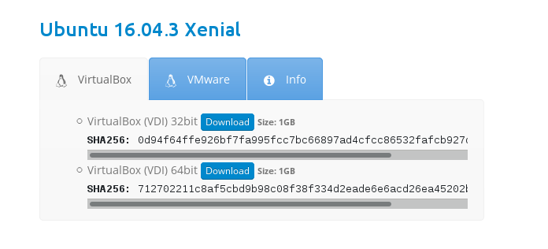
Datos de la imagen:
- Ubuntu 16.04.3 Xenial.
- VirtualBox (VDI) 32bit.
- SHA256: 0d94f64ffe926bf7fa995fcc7bc66897ad4cfcc86532fafcb927dafcf69d76e5
- Descarga.
- Username: osboxes
- Password: osboxes.org
- VB Guest Additions & VMware Tools: Not Installed
- VMware Compatibility: Version 10+
La imagen para VBox con extensión '.vdi' requiere que creemos la máquina Linux previamente en VBox y seleccionar el archivo 'Ubuntu 16.04.3 (32bit).vdi' como disco duro.
En pocos minutos está corriendo mi máquina virtual que albergara el servidor Zabbix.
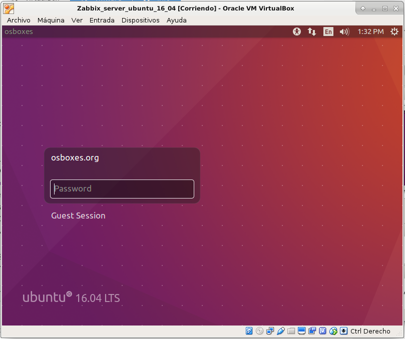
Antes de empezar instalar servidor OpenSSH:
# apt-get install openssh-server
Instalación Zabbix con paquetes
Existen varias formas de instalación pero la más recomendada es usar los paquetes que existen para cada tipo de distribución Linux: Debian, RedHat o Ubuntu.
Existe un repositorio oficial con los paquetes ordenados por distribución y todas las versiones disponibles de Zabbix.
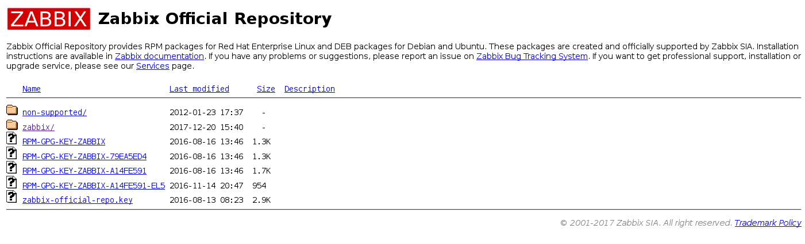
Para Ubuntu los comandos que debemos introducir son los siguientes:
# wget http://repo.zabbix.com/zabbix/3.2/ubuntu/pool/main/z/zabbix-release/zabbix-release_3.2-1+xenial_all.deb
# dpkg -i zabbix-release_3.2-1+xenial_all.deb
# apt-get update
Ahora ya estamos preparados para instalar el servidor Zabbix usando MySQL o PostreSQL, yo usare MySQL omo gestor de base de datos.
# apt-get install zabbix-server-mysql zabbix-frontend-php
Creando la base de datos
# mysql -uroot -posboxes.org
MariaBD[(none)]> create database zabbix character set utf8 collate utf8_bin;
MariaBD[(none)]> grant all privileges on zabbix.* to zabbix@localhost identified by 'osboxes.org';
MariaBD[(none)]> quit
# zcat /usr/share/doc/zabbix-server-mysql/create.sql.gz | mysql -uzabbix -p zabbix-release
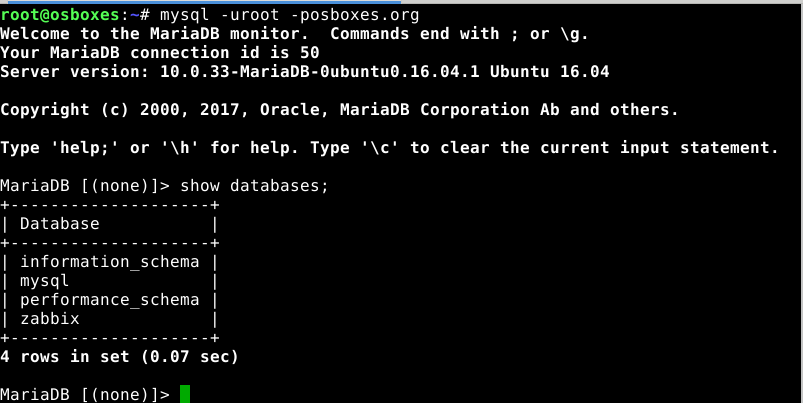
Algunos comandos en MySQL:
# mysql -uroot -posboxes.org
MariaBD[(none)]> show databases;
MariaBD[(none)]> use zabbix;
MariaBD[(none)]> show tables;
Configurando el demonio servidor Zabbix
Editamos el siguiente fichero y modificamos los parámetros de configuración de acceso a la BD MySQL.
# nano /etc/zabbix/zabbix_server.conf
DBHost=localhost
DBName=zabbix
DBUser=zabbix
DBPassword=osboxes.org
Arrancando el servicio
Arrancamos el servicio y configuramos para que arranque de forma automática con el arranque del sistema operativo.
# service zabbix-server start
# service zabbix-server status
# update-rc.d zabbix-server enable
# service apache2 restart
Instalación frontend PHP
Antes de comenzar con el proceso de instalación es recomendable editar /etc/apache2/conf-enabled/zabbix.conf y al menos establecer la zona horaria (set the right timezone ).
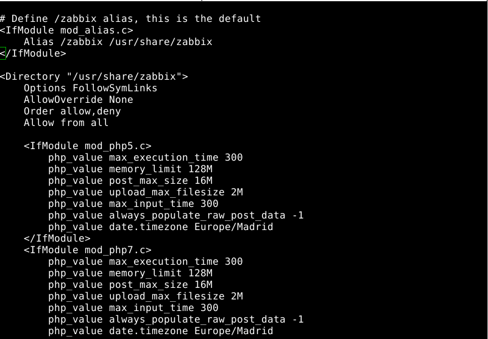
Ahora podemos acceder al frontend de Zabbix en la URL http://
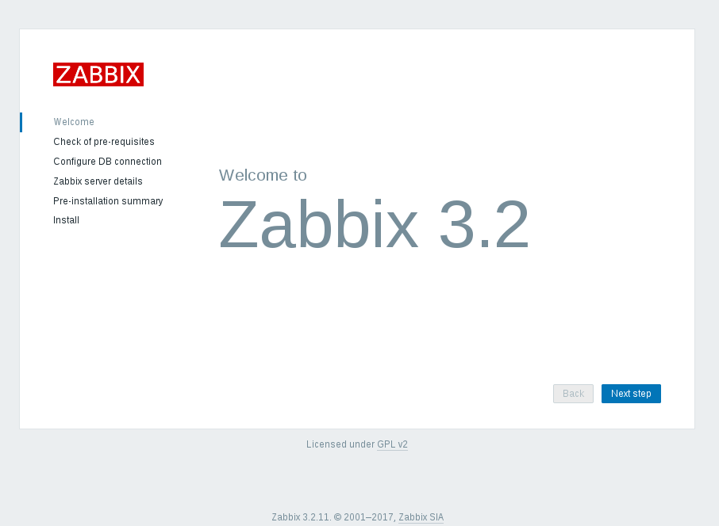
He instalado algunos paquetes adicionales para satisfacer algunos requisitos del servidor:
$ sudo apt install php7.0-bcmath
$ sudo apt-get install php7.0-mbstring
$ sudo apt-get install php7.0-xml
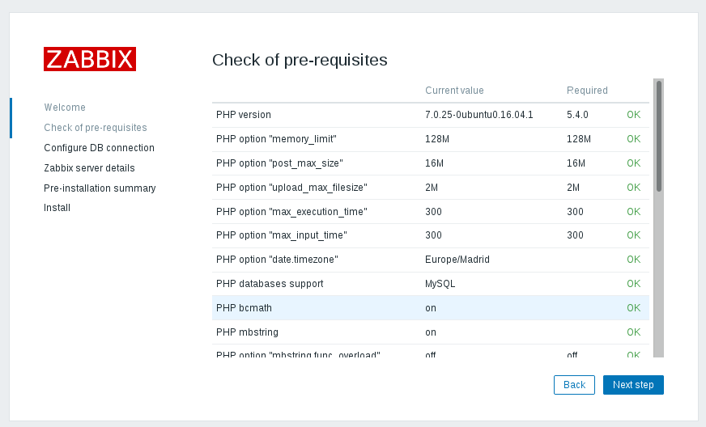
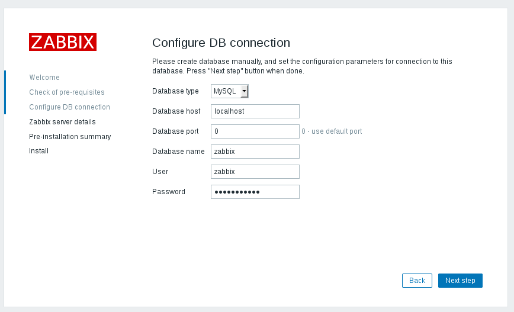
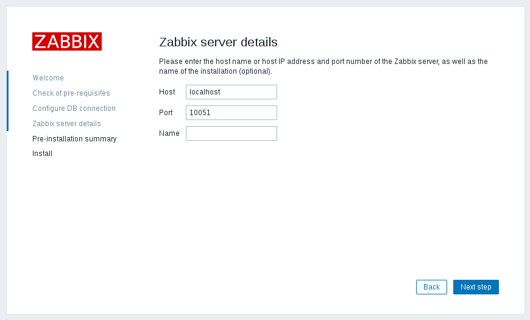
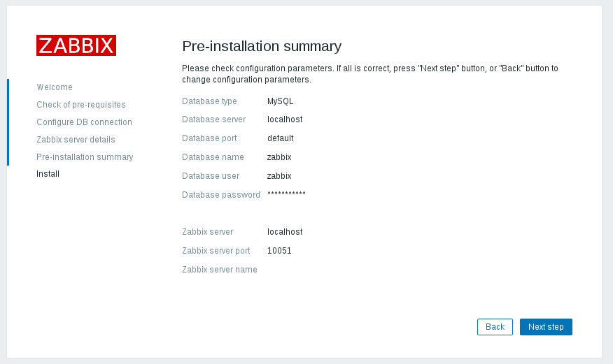
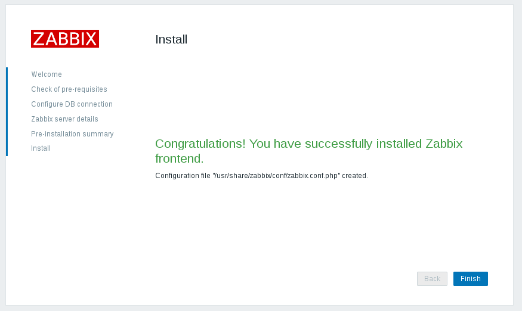
Advertencia: El usuario es “Admin” con clave “zabbix”.
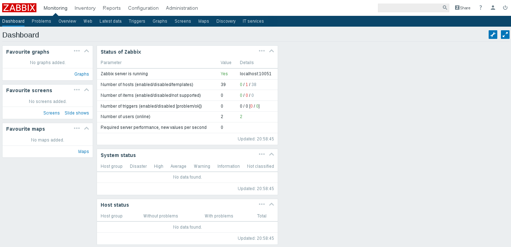
Enlaces externos
- Oficial Zabbix Documentation 3.2.